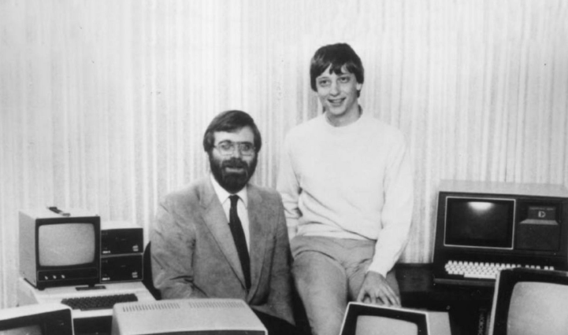
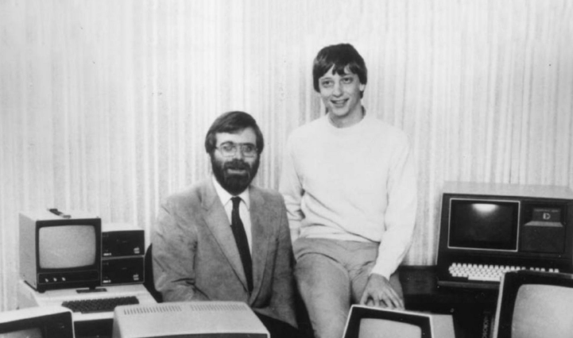
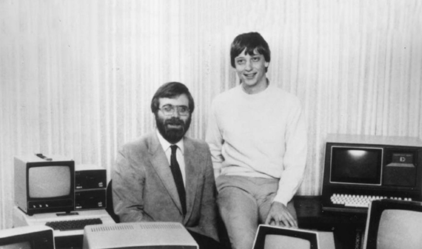

как microsoft создала?
В 1975 году Билл Гейтс и Пол Дж. Аллен, два друга детства из Сиэтла, преобразовали БЕЙСИК, популярный язык программирования для мэйнфреймов, для использования на одном из первых персональных компьютеров (PC), Altair. Вскоре после этого Гейтс и Аллен основали компанию Microsoft, название которой произошло от слов "микрокомпьютер" и "программное обеспечение".

В 1980 году Microsoft заключила партнерство с IBM, чтобы объединить операционную систему Microsoft с компьютерами IBM; в рамках этой сделки IBM выплачивала Microsoft роялти за каждую продажу. В 1985 году IBM обратилась к Microsoft с просьбой разработать новую операционную систему для своих компьютеров под названием OS/2. Microsoft выпустила эту операционную систему, но также продолжала разрабатыватьпродают свою собственную альтернативу, которая, как оказалось, составляет прямую конкуренцию OS/2. Microsoft Windows в конечном итоге превзошла OS/2 по объему продаж. Когда в 1990-х годах Microsoft выпустила несколько версий Microsoft Windows, они захватили более 90% мирового рынка персональных компьютеров. По состоянию на 30 июня 2015 года глобальный годовой доход Microsoft составлял 86,83 миллиарда долларов США (~109 миллиардов долларов в 2023 году), а в компании работало 128 076 сотрудников по всему миру.[3] Компания разрабатывает, производит, лицензирует и поддерживает широкий спектр программных продуктов для вычислительных устройств.[4][5][6] 1975-1985: Основание Microsoft Компьютер Altair 8800 с популярным телетайпом Model 33 ASR в качестве терминала, устройством для чтения бумажных лент и перфоратором для бумажной ленты. В конце 1974 года Пол Аллен, программист из Honeywell, прогуливаясь по Гарвард-сквер, увидел обложку январского номера журнала Popular Electronics за 1975 год, на которой был продемонстрирован первый микрокомпьютер Altair 8800.[7][8] Аллен купил журнал и поспешил в Currier House в Гарвардском колледже, где показал его школьному другу Биллу Гейтсу.[8] Они увидели потенциал в разработке реализации BASIC для системы.[9] Гейтс позвонил производителю микроинструментальных и телеметрических систем Altair (MITS) и предложил продемонстрировать внедрение. У Аллена и Гейтса не было ни переводчика, ни системы Altair, но за восемь недель до демонстрации они разработали переводчик с помощью Монте Давидоффа. Когда Аллен прилетел в Альбукерке на встречу с MITS, переводчик работал, и MITS согласился распространять Altair BASIC.[10][8] Аллен переехал в Альбукерке, Гейтс вскоре бросил Гарвард, чтобы присоединиться к нему, и они стали соучредителями Microsoft.[8] К концу 1976 года выручка компании составила 16 005 долларов.
первый microsoft